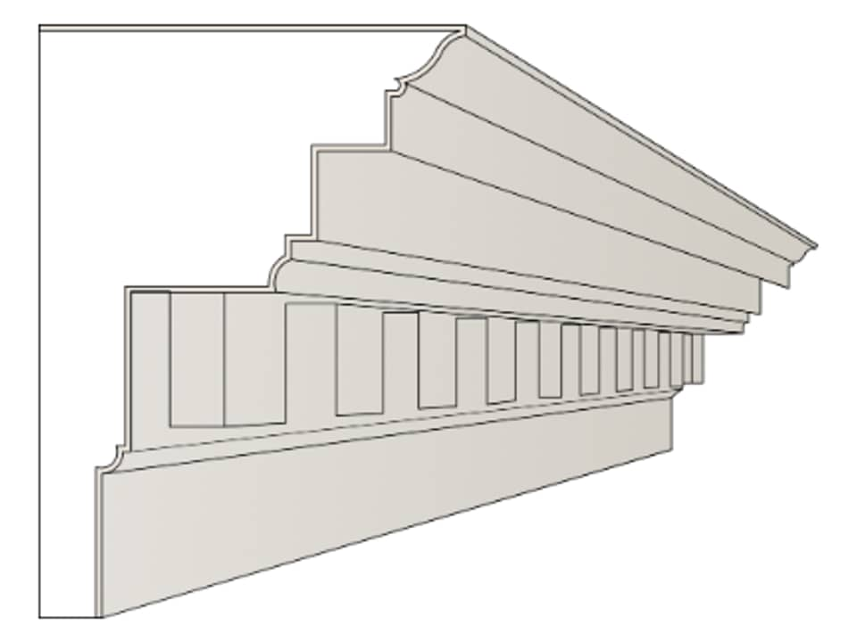

Decoprofil Modénature
Modénatures de façade sur mesure pour l'extérieur : corniches, bandeaux, encadrements de fenêtres et autres profils décoratifs. Profils légers en PSE recouverts d'une coque de résine, adaptés à la rénovation comme au neuf. Procédé sous Avis Technique du CSTB.
Découvrir Decoprofil Modénature